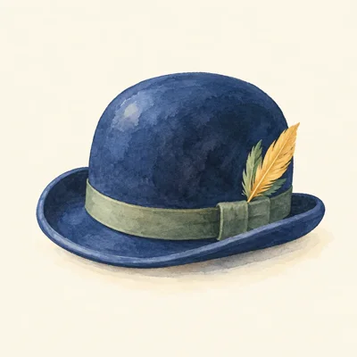
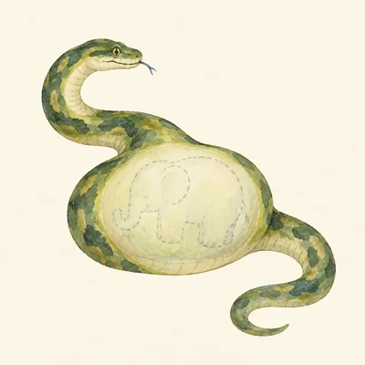

你在这篇文章里会碰到的一切——一枚点下去会「出水」的印章、一颗会呼吸的星星、一声像风铃的轻响——背后没有引擎、没有框架、没有构建。全部线索，就是三个文本文件：一份 HTML、一份 CSS、一份 JavaScript。
它叫《小王子 · 星间漫游》：九章可以走进去的旅程、原创的中文重述、原创的水彩插画，还有七枚藏在章节里、等你亲手收集的纪念。这篇是它的制作手记——为什么选择重做而不是移植一个现成的互动版；水彩世界怎么守住统一；165KB 的字体是从哪来的；一片星空和一串铃声怎么写出来；以及在「手机上要能玩、读屏器要读得懂、私密模式也不能崩」这些看不见的地方，花了哪些笨功夫。
文中数字与细节均来自 little-prince-journey 仓库真实源码与实测；为可读性省略了部分工程细节。
REMAKE
重做，而不是移植
起点是一个现成的 Unity 互动版。我们没有搬运它——而是为一个不同的媒介，把这个故事重新发明了一遍。
造物手记 · 01最初的念头来自 littleprince.dev——一个把《小王子》做成 Unity WebGL 互动体验的站点：八章、很美，但它是一台「装进网页里的游戏机」。打开它要先等引擎启动，几十 MB 的运行时下载、编译，然后才有第一个画面；而且它面向桌面浏览器，手机上打不开（连它的加载脚本里，都还留着 productVersion 0.1.0 这样的构建指纹）。我们盯着它想了很久，最后做的决定是：不移植，重做。
同一个故事，换网页原生的工具箱重新讲一遍：文字交给 HTML（它本来就最擅长承载阅读），排版交给 CSS，星空交给一块 <canvas>，铃声交给 WebAudio。结果是没有依赖、不需要构建的三个文件加一组插画——打开就是一个标签页的事。
重做换来的三件东西
第一，手机能完整走完全程。九章、七次互动、进度保存全部成立；窄屏下六宫格星球重排成三列，右侧的星轨导航收进底部的「章节坞」。第二，没有加载画面——首屏就是书名和星空，不是引擎启动日志。第三，故事活在网上：九章是九个带锚点的章节，每一站可以直链分享，读屏器和搜索引擎都能顺着读下去。
还有一条从第一天就立好的规矩：不碰原站的任何素材。文字全部原创重述，插画全部原创绘制（AI 辅助生成），页脚署名、明确致敬。致敬和安全，是同一件事的两面。
作品规格单
SPEC · 仓库实测WATERCOLOR
让交互件穿上世界的衣服
一张画风不对的图标，能毁掉整个世界。这章讲三次返工，和它们换来的规矩。
造物手记 · 02这个站的世界观是先立住的：水彩。深蓝的星空底、暖金的星光、纸纹上的湿画法晕染——所有场景插画共享同一种「介质感」。配色、字体、印章纸的白边，乃至按钮的圆角，全部服从它。世界观立住了，剩下的工作才是往里填东西。
但世界观不会自己守住，它会从最想不到的地方漏出去。真正教我们做事的，是三次返工——每一次都发生在「已经做完」之后。
早期的插画里，有的形象细看并不像小王子：发色偏了、衣服不对。根因是每次生成都在自由发挥。重画时把三个词写死进每一次提示词——金色头发、绿色衣服、长黄围巾——从此再没有漂移过。
初版只有故事骨架，九个章节之间还是一股「说明书味」。于是补写了一整个「帽子」章（蟒蛇与帽子的一键切换），把每一章扩写成有呼吸的散文，章节也由此从八章变成九章。
互动最初用手写的平涂 SVG：干净的色块、利落的线条，单看没问题，摆进水彩世界却像两种语言在同一个人的嘴里说话。解法在下一节——这次返工花掉了 12 张新插画。
把按钮变成「书页上的贴纸」
第三次返工的解法，是让交互件也「画出来」：12 枚水彩印章——帽子与蟒蛇、玫瑰、猴面包树幼苗、六颗大人的星球、麦田里的狐狸、井上井下——全部用场景插画的同一套画风生成，带同一圈纸白边。从此按钮不再贴在页面上，而是长在书页里：点下去，像亲手盖了一枚章。
同一条规矩延伸到了缩略图上。互动里要用到的小图，重新导出为 96px 宽的版本：12 张合计约 84KB，最重的一张印章原图（263KB）单独就比它们全部加起来还重——但画风不变。轻和统一，原来是可以同时要的。
PLAYABLE · 可玩小样 ①


大人们看到的，永远是一顶帽子。
这对印章是作品里的真实素材，交互逻辑也照搬第一章的「一幅画的两种看法」。
三次返工的共同点：用户说的都不是「不好」，而是「不够」——差一点，就差在一个世界没拧成一股劲。后来我们把它总结成一条规矩：交互件的画风统一，优先级高于单个组件画得多漂亮。
TYPEFACE
一个 165KB 的笔迹
想要「绘本的手写感」，不必带上 30MB 的字体全家桶——按用字子集化，气质也可以很轻。
造物手记 · 03排版气质是这个站最早定下的三件事之一（另外两件是星空和水彩）。默认的宋体与系统黑体，会让页面读起来像一份「文档」；而水彩世界需要一双手写的笔迹。选型很快：霞鹜文楷（LXGW WenKai）——开源、SIL OFL 许可、楷体的骨架里带着毛笔的呼吸感，正好接住水彩。
但完整字体一个字重就要 20MB 以上，网页不能带着全家桶走路。解法是子集化：页面真正用到的字，其实只有几百个。pyftsubset 按用字表裁出精简版，直接产出 woff2——两个字重各约 165KB，比原字体小了约 99%。
# 1) 从页面里收集真实用字（正文、界面文案、脚本字符串全算）
node -e "const t=require('fs').readFileSync('index.html','utf8');process.stdout.write([...new Set(t)].join(''))" > glyphs.txt
# 2) 按用字表子集化，直接产出 woff2；两个字重各跑一遍
pyftsubset LXGWWenKai-Regular.ttf --text-file=glyphs.txt --flavor=woff2 \
--layout-features='*' --output-file=wenkai-regular.woff2
pyftsubset LXGWWenKai-Medium.ttf --text-file=glyphs.txt --flavor=woff2 \
--layout-features='*' --output-file=wenkai-medium.woff2
两个静态字重怎么变成网页里的「半粗」？@font-face 的 font-weight 可以写成区间：regular 声明为 300 599，medium 声明为 600 900。于是 CSS 里任何 600 及以上的 font-weight 自动落到 medium，其余落到 regular——不用做真正的变量字体，一套区间映射就够用了。
还有两个小决定：regular 字重加 preload（它承担首屏正文的最大笔画数，让它最早到）；font-display: swap 保证字体迟到时，读者先看到系统字体而不是空白。哦对，还有一个来自下载环节的教训：字体发布在 GitHub Release 上，直连会中途截断——最后靠代理前缀加断点续传（curl -C -）把完整文件一段段拿回来。许可文件 OFL.txt 随字体一起自托管，合规是气质的一部分。
THE TRICK · 一个字重的秘密
两个静态字重 + 两段权重区间 = 一整条 font-weight 谱系
不用变量字体，不用额外工具链；代价只是中间值会就近落档。PLAYABLE · 可玩小样 ②
使沙漠显得美丽的，是它在某个看不见的地方，藏着一口井。
这一页正在使用的，就是和作品同款工艺的子集化字体。
点一下，整页在霞鹜文楷与系统衬线之间切换——同一句话，两种气质。
MOTION
一片会呼吸的星空
星野、滚动叙事、驯养狐狸的六步——动效不是装饰，是「这个世界活着」的证据；也全都算好了什么时候该停下。
造物手记 · 04整站最底下一层，是一块固定的 <canvas>：一片不安静的夜空。它做的事很简单——一群小点，各自呼吸。密度跟着画幅走：clamp(60, 180, 宽 × 高 / 10000)，太小的屏不空，大屏也不糊。每颗星有四个随机参数：半径、相位、速度、深度。亮度用 0.3 + 0.5 × |sin(时间 × 速度 + 相位)| 循环，这就是「呼吸」；鼠标移动时，每颗星按各自的深度位移——近的走得快，远的走得慢，视差就这么来了。
它也有自律的一面：渲染节流到 32ms（约 30fps，够柔也够省）；像素比封顶 2 倍（4K 屏上不烧显卡）；标签页隐藏即停；系统开启「减少动态效果」就彻底停笔；窗口尺寸变化时整片星空重建。一个背景动效，值得配上这些「什么时候不画」的规矩。
PLAYABLE · 可玩小样 ③
这一片是活的：移入看视差，呼吸看亮度。离开页面或开启「减少动态效果」，它会自己停下。
滚动叙事：读者走到哪，页面知道
九章是一条长叙事，页面要让读者随时知道「自己在第几站」：章节顶端越过视口 45% 高度线，就算「当前章」。地址栏也跟着走——每一章有一个真实锚点（#ch0…#ch8），滚动时用 pushState 同步，前进后退键可用、任意一章可直链分享。
这里埋着一个不显眼但重要的机关：导航令牌。快速连续跳章时，前一次平滑滚动的「到达」事件可能晚到——如果它把地址栏写回旧章节，一切就乱了。所以每次导航发一枚令牌，晚到的完成事件发现令牌已过期，就自己作废；再加一道 2.2 秒的超时兜底，保证状态一定收敛。滚动是动画，状态是契约。
三枚小机关
六步靠近，六段心跳
每次点击「再靠近一点」，狐狸都往前走一步，文字也换一段——从「它没有动」到「麦子会让我想起你」。每一步音阶上行 42Hz，900ms 忙碌锁专治连点，第六步画面悄悄变亮。
三转打水，一桶星光
转动三次，每次都有各自的文案与音高（392、523、659Hz），一根 CSS 变量驱动的进度线跟着绳子爬升；第三转落下，井下的画面换成井上——木桶里多了一桶星光。
七颗星，一条上行音阶
七个 ✦ 从 523Hz 起，以 1.108 的等比系数一路上行——点亮七颗，刚好是一条听得见的斜线。被点亮的星星弹一下、亮着、不再熄灭，晚上再看，它们还在。
铃声：0 个音频文件的配乐
整站的「声音」没有一个音频文件——全是合成出来的：一个正弦振荡器加一条指数包络（20ms 起音、随后指数衰减），音量压在 0.06 上下，像远处风铃。规矩同样严格：用户点开声音的那一刻才创建 AudioContext（浏览器的手势策略）；标签页隐藏时挂起并停止当前音符；每个音结束自己断开连接，不留尾巴。对了——开头封面那声「开始旅程」，是 659Hz；如果你在站里听见一串上行的叮咚，那是有人正让星星笑出声。
RESILIENCE
写给每一种进入方式
不是所有人都有鼠标、大屏和稳定的存储。这章是那些看不见、但决定气质的工程细节。
造物手记 · 05一个「可以走进去」的故事，最怕的是把读者关在门外：进度丢了、没有鼠标、读屏器读不出来、用私密模式打开就崩。所以这个站的工程重心，一半花在「正常人看不见的地方」。
先说进度系统。所有旅程状态存在一个 localStorage 键里：看到第几章、七枚纪念收集了几枚。读回来的每一段都要逐字段体检——章节索引越界就丢弃、数组去重排序、类型不对就回退默认；一份被改坏的存档，永远不会把旅程弄崩，最多让你少记住一章。写回则用 300ms 防抖，标签页关闭前再强制冲洗一次（pagehide）。整套读写都包在 try/catch 里——私密模式没有存储权限？那就静默降级：旅程照走，只是不记忆。
再分享一份「降级链」——好的体验不是装出来的，是一层层兜住的：
也让读屏器「看」得见
七处互动结果都挂在 aria-live 播报区上——「玫瑰绽放了，收下一份关于照料的纪念」这句，读屏器会替你念出来；按钮带 aria-pressed 状态、星图当前站带 aria-current；「旅程星图」是一个原生 dialog：打开时焦点进弹窗、Esc 可关、关闭后焦点还给触发按钮；还有一条跳到第一章的跳过链接，和一条完整的键盘路径——不用鼠标，也能把九章走完。
两个真实的小坑
循环里用 var 声明的变量被闭包共享：无论点哪颗星，点亮的都是最后一颗。修法是经典 IIFE，把每一颗的索引单独关起来——循环里的「每一次」，都要有自己的名字。
插画更新后同名落盘，页面却一直显示旧图。修法是在图片地址上挂版本号（?v=N）——文件名是身份的锚，缓存要靠参数来「换锁」。
还有一个「验证难」的教训：这种会呼吸的页面，自动化工具验起来格外吃力——长标签里截图会随机失败，跑着动画的元素连「可点击性」判定都会超时。最后的验收方式回归朴素：桌面、手机、键盘、静音、私密模式，每一种入口都用真人真机走一遍全程。写给每一种进入方式，就得用每一种方式进门。
结语
把一本名著做成可玩的网页，而不是做成一份「网页格式的文档」，差别在哪？三个答案。
陪：九章从名词变成了动词——给玫瑰浇一点水、替星球梳洗、驯养一只狐狸、打一桶水、让星星笑出声。读完之后你会记得故事；走完之后，你会记得自己做过的事。守：全部文字原创重述、全部插画原创绘制、页脚堂堂正正署名致敬——喜欢一个故事最体面的方式，是把它重新讲好，而不是把它搬走。轻：三个文件、零依赖零构建；首屏约 750KB 里大半是那幅封面；而故事的全部逻辑只有约 77KB。轻不是简陋，是让每个字节都有去处。
作品在这里：《小王子 · 星间漫游》→（源码在 GitHub：StarrySea1412/little-prince-journey），手机和电脑都可以进去。如果你也想把某个故事做成可玩的，最好的下一步不是继续读这篇文章——是打开它走一遍，然后从第一枚印章开始，做你自己的。
速查卡 · 做一本可玩绘本的六条手艺
- 先找媒介自己的钥匙：重做，而不是移植
- 立形象锚点（金发 · 绿衣 · 长围巾），写进每一次生成
- 交互件也要穿世界的衣服——画风统一优先于单件漂亮
- 字体可以子集化：气质 165KB 就够，别背 30MB 全家桶
- 动效要有呼吸，更要知道何时停下：隐藏停、减动效停
- 存档逐字段校验、降级保持无声——每一种进入方式都算数